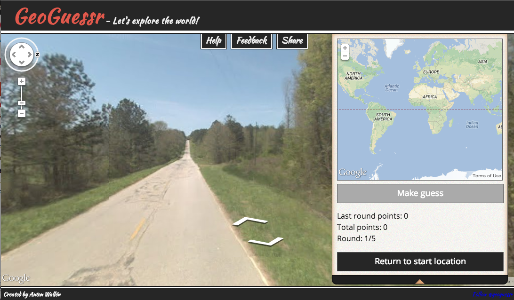
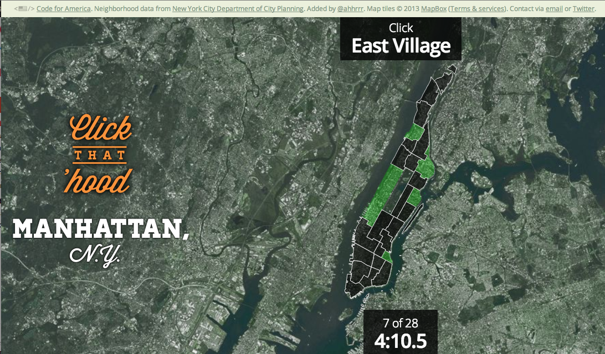
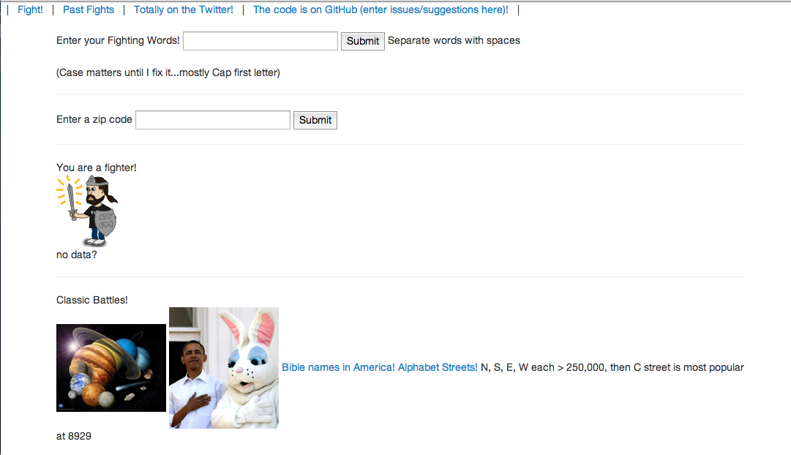
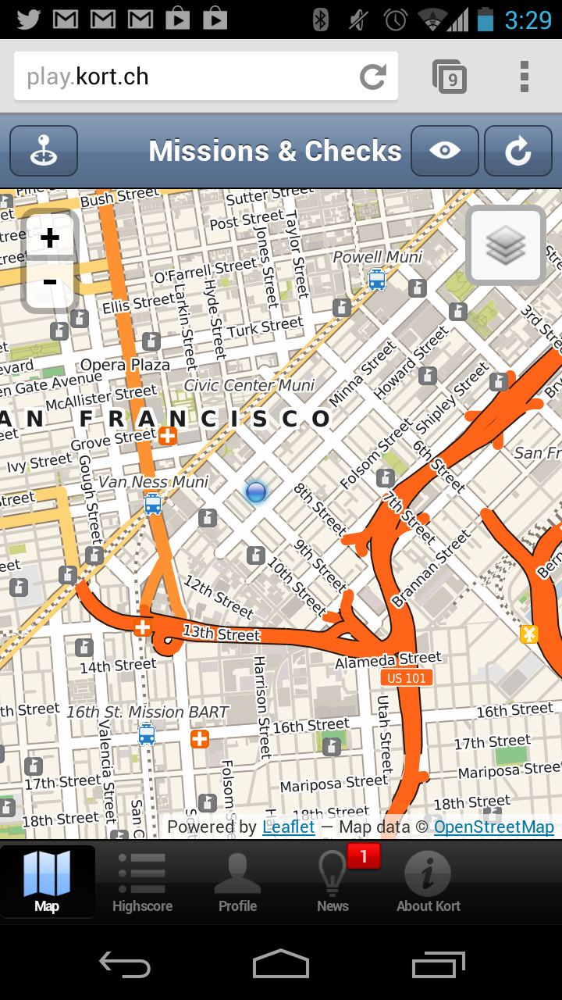

Jeux Sans Frontières: GeoGames
Rich Gibson
Sophia Parafina
A look at current geogames
GeoGuessr asks the player to locate 5 places using Google StreetView

Click that 'hood tests your knowledge of neighborhoods in cities all over the world. Built on open data and data submitted by users.

StreetName Fight compares the names of streets and ranks them by their frequency

Kort encourages users to improve OSM data by sending them on missions to update features with missing information such as a name.

What makes them so engaging
Kort assigns tasks and rewards players with koin
- Missions give players a sense of purpse
- Fixes and updates OpenStreetMap
- Koins, badges == bragging rights
- With lots of checkin apps, what differentiates it
GeoGuessr relies on the player hunting for clues
- Game play is about using clues to determine location
- No leader board, but can tweet score
- Challenge friends by sending them your URLL
- Asynchronous game play
Click that 'hood challenges the user's memory
- It's like a memory card game, you get to peak at names by hovering over a neighborhood
- It's built on user submitted data
- Encourages users to find data and teaches them how to convert it to GeoJSON
- Only 20% of the data is from Zillow neighborhoods, and Zillow data is replaced with better data
Streetname Fight frames silly questions
- Compare any set of words / numbers and find how many streets match
- Compare presidents, cars, trees, colors, anything
- Gives additional data to help players explore where these streets are
- Great for conspiracy theories and pop psychology analyses
Building GeoGuessr or StreetName Fight using OSM
- Don't have street level imagery
- Use tiles!
- Tag-info can provide data from OSM for StreetName Fight
- Tag-info service a bit slow, stand up your own
What makes a good game?
- Engages the user, makes them think and be resourceful
- Make it simple but challenging, e.g. challenge their brains
- Leader boards are not necessary, but nice to have bragging rights functionality
- Let the game be the hook into further exploration
A Keep F'ing With It Production
Rich Gibson (@richgibson)
Sophia Parafina (@spara)